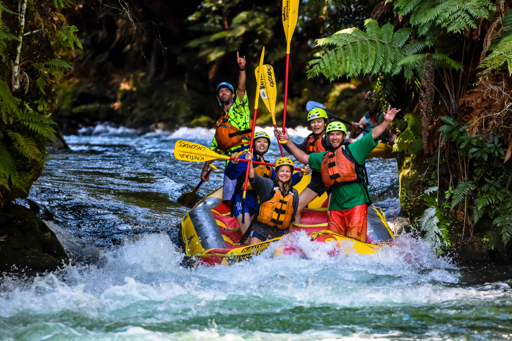

What is Cordillera Waters?
We are a tourism company located in the Andes mountain range on the Argentine side, Rio Negro. We specialize in creating unique, wonderful and adventurous experiences in the Andes mountain range. Together with our team we take you to see beautiful rivers and lagoons with views of the Andes mountain range. In addition, we will not only take you to see beautiful places, but we will also give you new rafting adventures, we will give you the equipment and the necessary security so that you can live a unique experience. That's not all, we will also give you options so that you can camp in safe places but at the same time you can enjoy the experience of being able to camp in the Andes mountain range, or else we will give you the option of sleeping in our cabins with a view of the Andes. rivers and lagoons next to the Andes mountain range, to enjoy our services contact us.
About attraction
Rivers
We have tourist guides for some of the rivers of the Andes mountain range, for example: the 7 lakes, Villa La Angostura, Lake Nahuel Huapi, El Bolsón, Villa Traful, San Martín de los Andes, Playa de Yuco. Where we will have transportation or rented cars for your trip thanks to Cordillera Waters, we assure you safety and pleasant experiences in these rivers and lakes.
Camping
As we said, we have two options to spend the night in our tourist guide. The first is the camping option, where we have tents for 2 to 8 people, including mats and sleeping bags. With this option you do not have to worry about the danger of animals or other events, since we have safe areas free of wild animals. The option of our cabins facing the rivers and lagoons is great, since we have cabins for 2 to 10 people, it brings everything you need to make your stay comfortable and safe during your trip. We also have food services for all people, whether vegetarian or celiac.
Rapids
Rafting is an extreme sport so it can only be done by people between 18 and 65 years of age. We will have all the complete equipment, rafts and professionals who will guide you through this unique experience, so you can enjoy the joy and excitement. to do an extreme sport with all the precautions and help from experts so that there are no accidents
